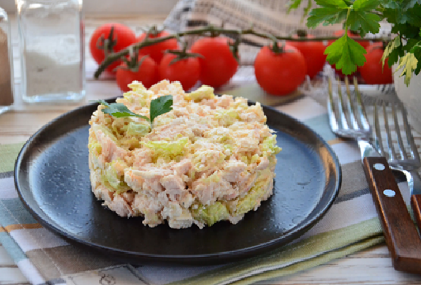

1 порция
127 ккал
40 мин
Ингридиенты:
- Капуста пекинская - 150 гр.
- Брынза - 170 гр.
- Филе куриное - 250 гр.
- Белки яичные варёные
- 3 шт.
Для соуса:
- Сметана - 3 ст. л.
- Горчица - 1 ч. л.
- Чеснок - 1 зубчик
- Сахар - 1 щепотка
По желанию:
- Соль
- Сок лимонный - 1 ст. л.
Способ приготовления:
1. Пекинскую капусту нашинковать, выложить в миску, добавить к ней по щепотке соли и сахара и слегка помять руками.
2. Добавить отварное куриное филе, нарезанное на кубики.
3. Всыпать фету или брынзу, также нарезанную на кубики.
4. Добавить нарезанные отварные яичные белки (желтки используйте для приготовления других блюд)
5. Приготовить соус: к сметане добавить соль, сахар, горчицу, измельченный чеснок и перемешать.
6. По желанию можно добавить немного лимонного сока, с ним соус получается, на мой взгляд, вкуснее.
7. Добавить соус в салат и аккуратно перемешать.
8. Если вы готовите салат за несколько часов до подаче, то лучше заправить его соусом незадолго до подачи. Приятного аппетита!